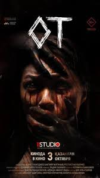

От
Жанр:Триллер,Драма
Режиссёр:Радик Эшимо
В ролях:Айсанат Эдигеева · Омурбек Израилов · Калича Сейдалиева · Жанылай Исакова · Аскар Качкынбаев · Руслан Орозакунов
Описание:Фильм затрагивает тему бытового насилия в современном кыргызском обществе. В центре сюжета – пожар в доме молодой семьи, которая недавно потеряла первенца, и мистические события, связанные с этим домом и его жильцами.
Продолжительность:1ч 41 мин
Забронировать билет